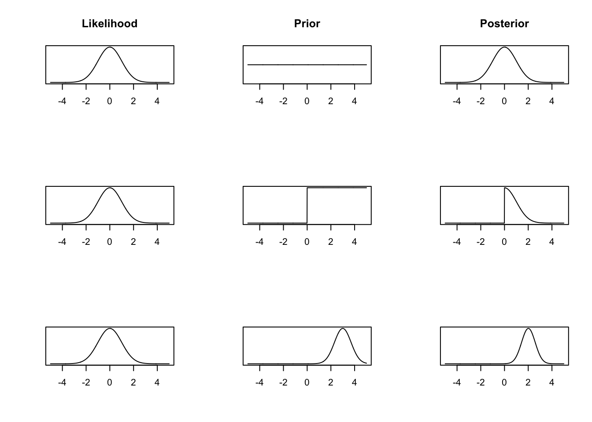

Chapter 1 Fundamentals of Bayesian Inference
Bayesian inference is built on a different way of thinking about parameters of probability distributions than methods you have learnt so far. In the past 30 years or so, Bayesian inference has become much more popular. This is partly due to increased computational power becoming available. In this first chapter, we are going to set out to answer:
What are the fundamental principles of Bayesian inference?
What makes Bayesian inference different from other methods?
1.1 Statistical Inference
The purpose of statistical inference is to “draw conclusions, from numerical data, about quantities that are not observed” (Bayesian Data Analysis, chapter 1). Generally speaking, there are two kinds of inference:
- Inference for quantities that are unobserved or haven’t happened yet. Examples of this might be the size of a payout an insurance company has to make, or a patients outcome in a clinical trial had they been received a certain treatment.
- Inference for quantities that are not possible to observe. This is usual because they are part of modelling process, like parameters in a linear model.
1.2 Frequentist Theory
Frequentist interpretation of probability is built upon the theory on long run events. Probabilities must be interpretable as frequencies over multiple repetitions of the experiment that is being analysed, and are calculated from the sampling distributions of measured quantities.
Definition 1.1 In the frequentist world, the long run relative frequency of an event is the probability of that event.
Example 1.1 If a frequentist wanted to assign a probability to rolling a 6 on a particular dice, then they would roll the dice a large number of times and compute the relative frequency.
Typical frequentist analysis starts with a statistical model \(\{P_\theta: \theta \in \Theta\}\), where \(\Theta\) denotes some parameter space. E.g. \(\{N(\theta,1) : \theta \in \Theta = \mathbb{R}\}\). The data are assumed to be generated from some statistical model, and we often consider the case that they are independent and identically distributed (i.i.d), i.e. \[ Y_1,\dotsc,Y_n \overset{i.i.d}{\sim} P_{\theta}, \; \theta \in \Theta. \] Without going much into the measure-theoretic formulation, we write \[ Y_1,\dotsc,Y_n \overset{i.i.d}{\sim} \pi(y\mid {\theta}),\; \theta \in \Theta, \] where \(\pi(x\mid {\theta})\) is the probability density or mass function depending on whether \(P_{\theta}\) is continuous or discrete. We shall simply refer to it as the density function of \(P_{\theta}\). The actual observed data \(\boldsymbol{y} = (y_1,\dotsc,y_n)\) are considered to be realisations of the random variable \(Y = (Y_1,\dotsc,Y_n)\).
The fundamental difference between frequentist and Bayesian statistical analysis is that \(\theta\) is viewed a deterministic (non-random) quantity by a frequentist but a Bayesian statistician would view it as a random quantity. To estimate \(\theta\) in the frequentist paradigm, one would consider some estimator \(\hat{\theta}(Y)\), and analyse its finite-sample distribution or asymptotic distribution.
The most common way to estimate the value of \(\theta\) is using maximum likelihood estimation (MLE). Although other methods do exist (e.g. method of moments). Recall that the likelihood function \(\pi(\boldsymbol{y} \mid \theta)\) is simply the joint density of \(Y_1,\dotsc,Y_n\). Under the i.i.d assumption, it is \[ \pi(\boldsymbol{y} \mid \theta) = \prod_{i=1}^n \pi(y_i\mid \theta). \]
Definition 1.2 The maximum likelihood estimator of \(\theta\), \(\hat{\theta}\), is the value such that \(\hat{\theta} = \mathop{\mathrm{arg\,max}}_{\theta} \pi(Y\mid \theta)\).
The key to quantify uncertainty in the frequentist paradim is using confidence intervals.
Definition 1.3 An interval \([L_n(Y), U_n(Y)] \subseteq \mathbb{R}\), is called a confidence interval (CI) at level \(1 - \alpha \in (0,1)\) for \(\theta\), if \[ \pi\big(L_n(Y) \leq \theta \leq U_n(Y)\big) = 1 - \alpha. \]
It is important to stress that the confidence interval (CI) \([L_n(Y), U_n(Y)]\) is a random quantity and the parameter \(\theta\) is fixed (non-random) in the frequentist paradigm! The correct interpretation of CIs is that if we construct many confidence intervals from repeated random samples, \(100(1-\alpha)\%\) of these intervals would contain the true parameter \(\theta\). It does not mean that a particular interval contains the true value of \(\theta\) with probability \(1-\alpha\). Note that the CI interpretation is based on the previous definition of the probability of an event and this is why CIs based inference are considered to be frequentist.
Note that, in many cases, one can only hope to obtain intervals that contains \(\theta\) at level \(1-\alpha\) when \(n\) is sufficiently large. For example, asymptotic properties of MLE \[ \sqrt{n} (\hat{\theta} - \theta) \overset{d}{\longrightarrow} N(0, I(\theta)^{-1}), \] allows one to use \[ \hat{\theta} \pm \Phi^{-1}{(1-\alpha / 2)} \sqrt{\frac{1}{n I(\hat{\theta})}}, \] as an approxiamte CI at level \(1-\alpha\), under mild conditions, where \(\Phi(x)\) is the cumulative distribution function of \(N(0,1)\) and \[ I(\theta) = \mathrm{Var} \left[ \frac{\partial}{\partial \theta} \log \pi(Y\mid \theta) \right] = -\mathbb{E} \left[ \frac{\partial^2}{\partial \theta^2} \log \pi(Y \mid \theta) \right], \qquad Y \sim \pi(y\mid\theta) \] is the Fisher information.
1.3 Bayesian Paradigm
Given that we want to understand the properties of \(\theta\) given the data we have observed \(\boldsymbol{y}\), then you might think it makes sense to investigate the distribution \(\pi(\theta \mid \boldsymbol{y})\). This distribution says what are the likely values of \(\theta\) given the information we have observed from the data \(\boldsymbol{y}\). We will talk about Bayes’ theorem in more detail later on in this chapter, but, for now, we will use it to write down this distribution \[ \pi(\theta \mid \boldsymbol{y}) = \frac{\pi(\boldsymbol{y} \mid \theta)\pi(\theta)}{\pi(\boldsymbol{y})}. \] This is where frequentist theory cannot help us, particularly the term \(\pi(\theta)\). Randomness can only come from the data, so how can we assign a probability distribution to a constant \(\theta\)? The term \(\pi(\theta)\) is meaningless under this philosophy. Instead, we turn to a different philosophy where we can assign a probability distribution to \(\theta\).
The Bayesian paradigm is built around a different interpretation of probability. This allows us to generate probability distributions for parameters values.
Definition 1.4 In the Bayesian world, the subjective belief of an event is the probability of that event.
This definition means we can assign probabilities to events that frequentists do not recognise as valid.
Example 1.2 Consider the following events:
Lukas’s height is above 192cm.
Mengchu’s weight is above 74kg.
Man United will lose against Fulham on 26 Jan 2025.
There is more than 90% chance that a particular experiment is going to fail
Probabilities can be assigned to any events in the Bayesian paradigm, but they are necessarily subjective. The key in Bayesian inference is to understand how does subject beliefs change when some data/evidence become available. This is essentially captured in the Bayes’ theorem. Before we discuss Bayes’ theorem, we recap some basic facts in probability.
Definition 1.5 Given two events \(A\) and \(B\), the conditional probability that event \(A\) occurs given the event \(B\) has already occurred is \[ \pi(A \mid B) = \frac{\pi(A \cap B)}{\pi(B)}, \] when \(\pi(B) > 0\).
Definition 1.6 Two events \(A\) and \(B\) are conditionally independent given event \(C\) if and only if \[ \pi(A \cap B \mid C) = \pi(A \mid C)\pi(B \mid C).\]
Definition 1.7 For two random variables \(X,Y\) that have a joint pdf \(\pi(x,y)\).
The marginal pdf for \(X\) is \(\pi(x) = \int \pi(x,y)dy\).
The conditional pdf of \(Y\mid X\) is \(\pi(y\mid x) = \pi(x,y)/\pi(x)\). If \(X\) and \(Y\) are independent \(\pi(y \mid x) = \pi(y)\).
We can factorise a joint pdf in different ways since \(\pi(x,y) = \pi(x)\pi(y\mid x) = \pi(x\mid y)\pi(y)\).
Combining 1, 2 and 3, we have the partition theorem, also known as law of total probability \(\pi(x) = \int\pi(x\mid y)\pi(y) dy\).
An extension to 4 is that suppose \(Z\) is another random variable, then we have \[ \pi(y \mid x) = \int \pi(y \mid x, z) \, \pi(z\mid x)dz. \] If \(Y\) and \(X\) are conditionally independent given \(Z\) then \(\pi(y \mid x, z) = \pi(y \mid z)\).
For a sequence of random variables \(X_1,\dotsc,X_n\), we can factorise the joint pdf in many ways, e.g. \[ \pi(x_1,\dotsc,x_n) = \pi(x_1\mid x_2,\dotsc,x_n)\pi(x_2,x_3\mid x_4,\dotsc,x_n)\pi(x_4,\dotsc,x_n). \] In practice, we may wish to factorise the joint density in a way that exploits the conditionally independence structure between variables.
We say \(X_1,\dotsc,X_n\) are conditionally independent and identically distributed given some random variable \(Y\) if \[ \pi(x_1,\dotsc,x_n\mid y) = \prod_{i=1}^n \pi(x_i\mid y). \]
Definition 1.8 Let \(\pi(y_1, \ldots, y_N)\) be the joint density of \(Y_1, \ldots, Y_N\). If \(\pi(y_1, \ldots, y_N) = \pi(y_{\sigma_1}, \ldots, y_{\sigma_N})\) for any permutations \(\sigma\) of \(\{1, \ldots, N\}\), then \(Y_1, \ldots, Y_N\) are exchangeable.
Exchangeability means that the labels of the random variables don’t contain any information about the outcomes. This is an important idea in many areas of probability and statistics, and it is a weaker assumption compared to saying \(Y_1,\dotsc,Y_N\) are independent.
Example 1.3 If \(Y_i \sim \text{Bin}(n, p)\) are independent and identically distributed for \(i = 1, 2, 3\), then \(\pi(y_1, y_2, y_3) = \pi(y_3, y_1, y_2)\). Therefore, independence implies exchangeability.
Example 1.4 Let \((X, Y)\) follow a bivariate normal distribution with mean 0, variances \(\sigma_x^2 = \sigma_y^2 = 1\) and a correlation parameter \(\rho \in [-1, 1]\). \((X, Y)\) are exchangeable, but only independent if \(\rho = 0\).
Proposition 1.1 If \(\theta \sim \pi(\theta)\) and \((Y_1, \ldots, Y_N)\) are conditionally iid given the random variable \(\theta\), then marginally \(Y_1, \ldots, Y_N\) are exchangeable.
Proof. Suppose \((Y_1, \ldots, Y_N)\) are conditionally iid given some parameter \(\theta\). Then for any permutation \(\sigma\) of \(\{1, \ldots, N\}\) and observations \(\{y_1, \ldots, y_N\}\) \[\begin{equation} \begin{split} \pi(y_1, \ldots, y_N) &= \int \pi(y_1, \ldots, y_N \mid \theta) \pi(\theta)\, d\theta \qquad \\ & = \int \left\{\prod_{i=1}^N\pi(y_i \mid \theta)\right\} \pi(\theta)\, d\theta \qquad \textrm{(conditionally iid)}\\ & = \int \left\{\prod_{i=1}^N\pi(y_{\sigma_i} \mid \theta)\right\} \pi(\theta)\, d\theta \qquad \textrm{(product is commutative)} \\ & = \pi(y_{\sigma_1}, \ldots, y_{\sigma_N}) \qquad \end{split} \end{equation}\]
This tells us that if we have some conditionally iid random variables and a subjective prior belief about some parameter \(\theta\), then we have exchangeability. This is nice to have, but the implication in the other direction is much more interesting and powerful.
Theorem 1.1 (de Finetti, informal) If a sequence of random variables \((Y_1, \ldots, Y_N)\) is exchangeable, then its joint distribution can be written as \[ \pi(y_1, \ldots, y_N) = \int \left\{\prod_{i=1}^N\pi(y_i \mid \theta)\right\} \pi(\theta)\, d\theta \] for some parameter \(\theta\), some distribution on \(\theta\), and some sampling model \(\pi(y_i \mid \theta)\).
This is a kind of existence theorem for Bayesian inference. It says that if we have exchangeable random varibales, then a parameter \(\theta\) must exist and a subjective probability distribution \(\pi(\theta)\) must also exist. The argument against Bayesian inference is that it doesn’t guarantee a good subjective probability distribution \(\pi(\theta)\) exists.
1.4 Bayes’ Theorem
Now we have an understanding of conditional probability and exchangeability, we can put these two together to understand Bayes’ Theorem. Bayes’ theorem is concerned with the distribution of the parameter \(\theta\) given some observed data \(y\). It tries to answer the question: what does the data tell us about the model parameters?
Theorem 1.2 (Bayes) The conditional distribution of \(\theta\mid y\) has density \[ \pi(\theta \mid y) = \frac{\pi(y \mid \theta)\pi(\theta)}{\pi(y)} \]
Proof. \[\begin{align} \pi(\theta \mid y) &= \frac{\pi(\theta, y)}{\pi(y)}\\ \implies \pi(\theta, y) &= \pi(\theta \mid y)\pi(y) \end{align}\] Analogously, using \(\pi(y \mid \theta)\) we can derive \[ \pi(\theta, y) = \pi(y \mid \theta)\pi(\theta) \] Putting these two terms equal to each other and dividing by \(\pi(y)\) gives \[ \pi(\theta \mid y) = \frac{\pi(y \mid \theta)\pi(\theta)}{\pi(y)} \]
There are four terms in Bayes’ theorem:
- The posterior distribution \(\pi(\theta \mid y)\). This tells us our belief about the model parameter \(\theta\) given the data we have observed \(y\).
- The likelihood function \(\pi(y \mid \theta)\). The likelihood function is common to both frequentist and Bayesian methods.
- The prior distribution \(\pi(\theta)\). This is the distribution that describes our prior beliefs about the value of \(\theta\). The form of \(\theta\) should be decided before we see the data. It may be a vague distribution (e.g. \(\theta \sim N(0, 10^2)\)) or a specific distribution based on prior information from experts (e.g. \(\theta \sim N(5.5, 1.3^2)\)).
- The evidence of the data \(\pi(y)\). This is sometimes called the average probability of the data or the marginal likelihood. In practice, we do not need to derive this term as it can be back computed to ensure the posterior distribution sums/integrates to one.
A consequence of point four is that posterior distributions are usually derived proportionally, and (up to proportionality) Bayes’ theorem \[ \pi(\theta \mid y) \propto \pi(y\mid\theta)\pi(\theta). \]
Some history of Thomas Bayes. Thomas Bayes was an English theologean born in 1702. His “Essay towards solving a problem in the doctrine of chances” was published posthumously. It introduces theroems on conditional probability and the idea of prior probability. He discusses an experiment where the data can be modelled using the Binomial distribution and he guesses (places a prior distribution) on the probability of success.
Richard Price sent Bayes’ work to the Royal Society two years after Bayes had died. In his commentary on Bayes’ work, he suggested that the Bayesian way of thinking proves the existance of God, stating: The purpose I mean is, to show what reason we have for believing that there are in the constitution of things fixt laws according to which things happen, and that, therefore, the frame of the world must be the effect of the wisdom and power of an intelligent cause; and thus to confirm the argument taken from final causes for the existence of the Deity.
It’s not clear how Bayesian Thomas Bayes actually was, as his work was mainly about specific forms of probability theory and not his intepretation of it. The Bayesian way of thinking was really popularised by Laplace, who wrote about deductive probability in the early 19th century.
Example 1.5 We finish this chapter with a very simple example. The advantage of the example being so simple is that we can obtain plots in R that show what’s going on.
Suppose we have a model \(Y \sim N(\theta, 1)\) and we want to estimate \(\theta\). To do this we need to derive the posterior distribution. By Bayes’ theorem, \[ \pi(\theta \mid y) \propto \pi(y \mid \theta) \pi(\theta). \] We know the form of \(\pi(y \mid \theta) = \frac{1}{\sqrt{2\pi}}e^{-\frac{1}{2}(y - \theta)^2}\), but how should we describe our prior beliefs about \(\theta\)? Here are three options:
We can be very vague about \(\theta\) – we genuinely don’t know about its value. We assign a uniform prior distribution to \(\theta\) that takes values between -1,000 and +1,000, i.e. \(\theta \sim u[-1000, 1000]\). We can write explicitly its distribution as \[ \pi(\theta) = \begin{cases} \frac{1}{2000}& q \in [-1000, 1000] \\ 0 & \textrm{otherwise.} \end{cases} \] ] Up to proportionality, we have \(\pi(\theta) \propto 1\) for \(\theta \in [-1000, 1000]\).
After thinking hard about the problem, or talking to an expert, we decide that the only thing we know about \(\theta\) is that it can’t be negative. We adjust our prior distribution from 1. to be \(\theta \sim u[0, 1000]\). Up to proportionality \(\pi(\theta) \propto 1\) for \(\theta \in [0, 1000]\).
We decide to talk to a series of experts about \(\theta\) asking for their views on likely values of \(\theta\). Averaging the experts opinions gives \(\theta \sim N(3, 0.7^2)\). This is a method known as prior elicitation.
We now go and observe some data. After a lot of time and effort, we collect one data point: \(y = 0\).
Now we have all the ingredients to construct the posterior distribution. We multiply the likelihood function evaluated at \(y = 0\) by each of the three prior distributions. This gives us the posterior distributions. These are
- For the uniform prior distribution, the posterior distribution is \(\pi(\theta \mid \boldsymbol{y}) = \frac{1}{\sqrt{2\pi}}\exp\left(-\frac{1}{2}\theta^2\right)\) for \(\theta \in [-1000, 1000]\).
- For the uniform prior distribution, the posterior distribution is \(\pi(\theta \mid \boldsymbol{y}) = \frac{1}{\sqrt{2\pi}}\exp\left(-\frac{1}{2}\theta^2\right)\) for \(\theta \in [0, 1000]\).
- For the normal prior distribution, as we are only interested in the posterior distribution up to proportionality, we can write it as \(\pi(\theta \mid \boldsymbol{y}) \propto \exp\left(-\frac{1}{2}\theta^2\right)\exp\left(-\frac{1}{2}\left(\frac{\theta - 3}{0.7}\right)^2\right)\). Combining like terms, gives \(\pi(\theta \mid \boldsymbol{y}) \propto \exp\left(-\frac{1}{2}\left(\frac{1.7\theta^2 - 6\theta}{0.7^2}\right)\right)\) for \(\theta \in \mathbb{R}\).
#The likelihood function is the normal PDF
#To illustrate this, we evaluate this from [-5, 5].
x <- seq(-5, 5, 0.01)
likelihood <- dnorm(x, mean = 0, sd = 1)
#The first prior distribution we try is a
#uniform [-1000, 1000] distribution. This is a
#vague prior distribution.
uniform.prior <- rep(1, length(x))
posterior1 <- likelihood*uniform.prior
#The second prior distribution we try is a uniform
#[0, 1000] distribution, i.e. theta is non-negative.
step.prior <- ifelse(x >= 0, 1, 0)
posterior2 <- likelihood*step.prior
#The third prior distribution we try is a
#specific normal prior distribution. It
#has mean 3 and variance 0.7.
normal.prior <- dnorm(x, mean = 3, sd = 0.7)
posterior3 <- likelihood*normal.prior
#Now we plot the likelihoods, prior and posterior distributions.
#Each row corresponds to a different prior distribution. Each
#column corresponds to a part in Bayes' theorem.
par(mfrow = c(3, 3))
plot(x, likelihood, type = 'l', xlab = "", ylab = "", yaxt = "n", main = "Likelihood")
plot(x, uniform.prior, type = 'l', yaxt = "n", xlab = "", ylab = "", main = "Prior")
plot(x, posterior1, type = 'l', yaxt = "n", xlab = "", ylab = "", main = "Posterior")
plot(x, likelihood, type = 'l', xlab = "", ylab = "", yaxt = "n")
plot(x, step.prior, type = 'l', yaxt = "n", xlab = "", ylab = "")
plot(x, posterior2, type = 'l', yaxt = "n", xlab = "", ylab = "")
plot(x, likelihood, type = 'l', xlab = "", ylab = "", yaxt = "n")
plot(x, normal.prior, type = 'l', yaxt = "n", xlab = "", ylab = "")
plot(x, posterior3, type = 'l', yaxt = "n", xlab = "", ylab = "")
The posterior distribution is proportional to the likelihood function. The prior distribution closely matches frequentist inference. Both the MLE and posterior mean are 0.
We get a lopsided posterior distribution, that is proportional to the likelihood function for positive values of \(\theta\), but is 0 for negative values of \(\theta\).
We get some sort of average of the likelihood function and the prior distribution. Had we collected more data, the posterior distribution would have been weighted toward the information from the likelihood function more.